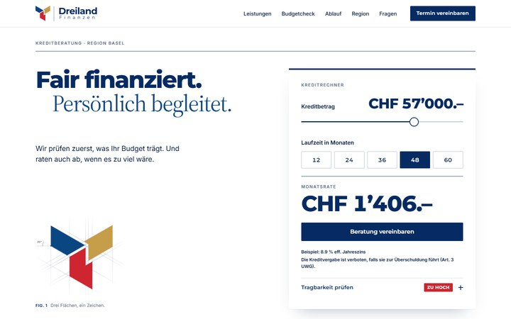
Schweizer Raster, Bildmarke als Konstruktionszeichnung.
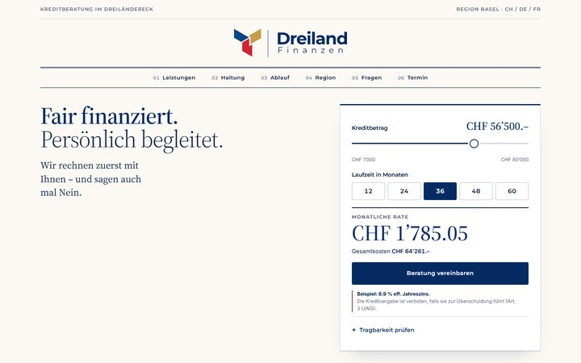
Editorial wie ein Schweizer Magazin.
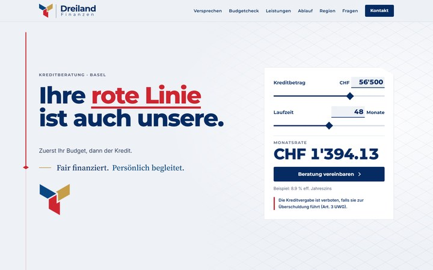
Eine rote Grenzlinie zieht sich durch die Seite.
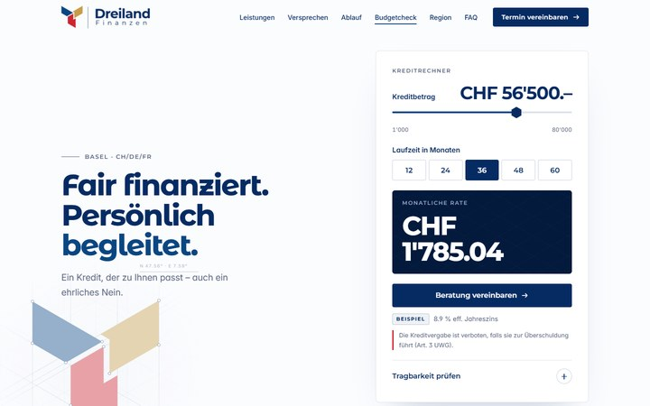
SVG-Konstruktionslinien und animierter Rechner.
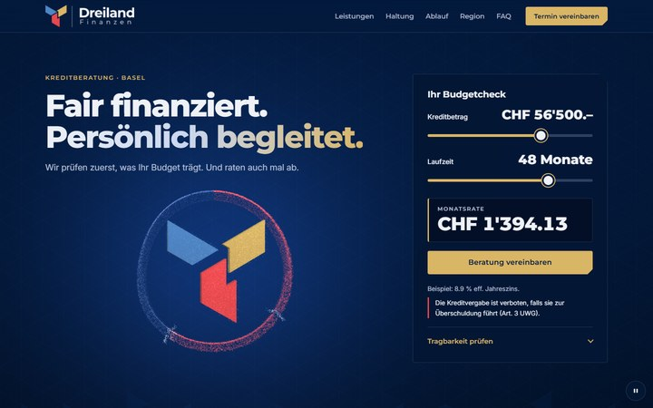
Partikel-Szene mit Tragbarkeitsring.
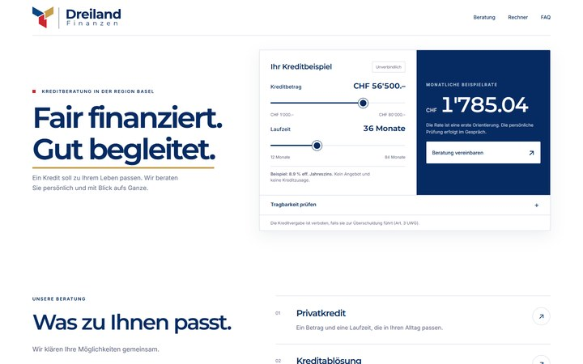
Hell, ruhig, editorial.
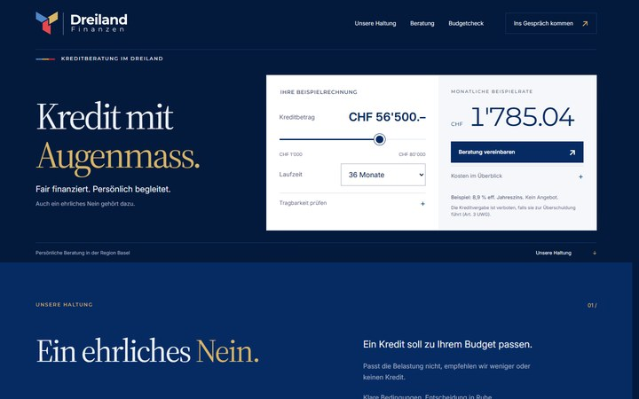
Dunkles Editorial mit Dreiland-Karte.
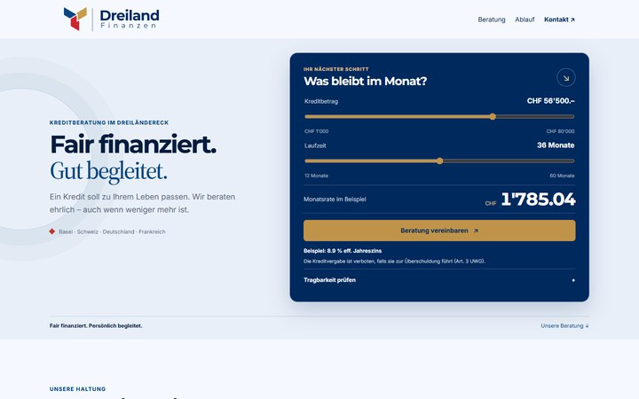
Räumliche Architektur.
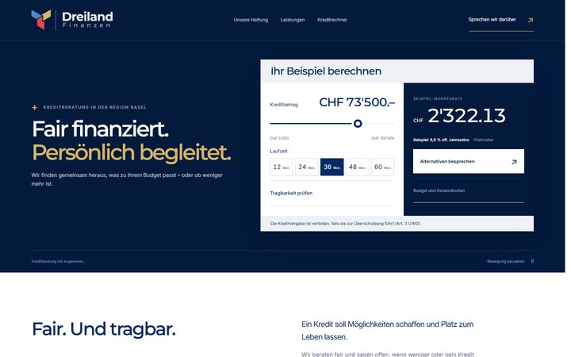
Logo-Reveal, SVG-Flächenaufbau, Morphing.
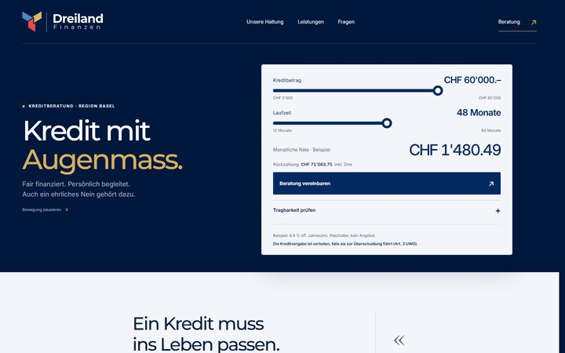
Plastische Farbflächen mit Compute-Partikeln.
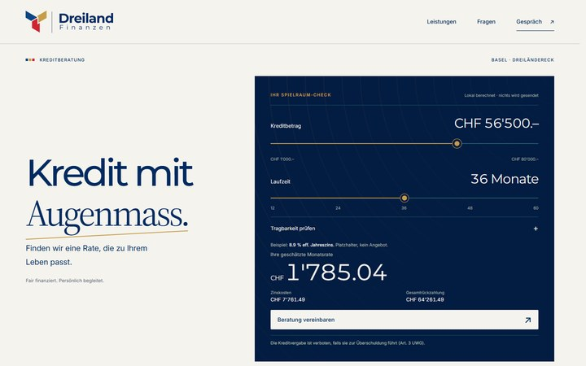
Terrassierte Inseln, goldene Brücken.
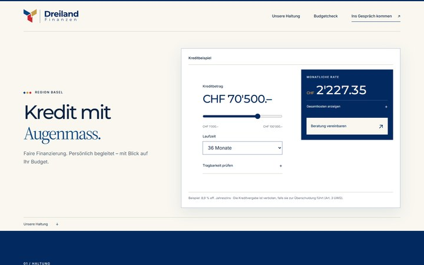
Relief-Landschaft aus drei Ländern.
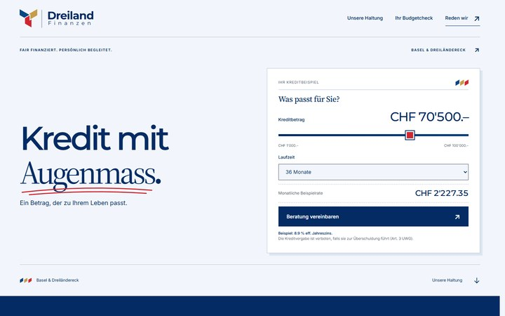
Die Seite als Beratungsgespräch.